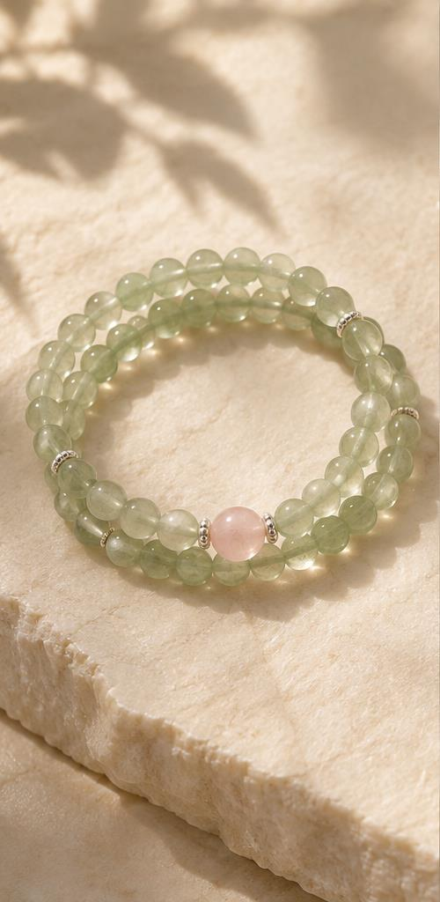
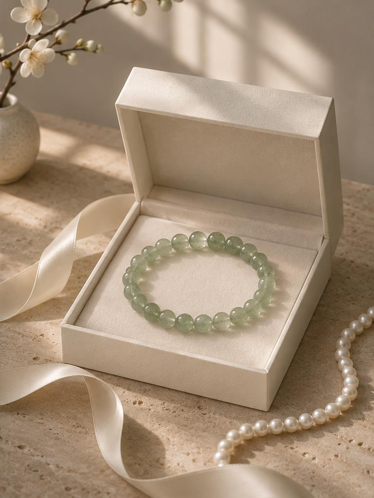

THE SENHUI JOURNAL
在细微处，
与美相遇。
关于材质、搭配与心意，一些安静的记录。

日常搭配 / SENHUI NOTES
把清透，穿进你的衣橱。
从颜色的留白，到饰品的比例，寻找舒服的搭配方式。
阅读手记 ↗
礼赠灵感 / SENHUI NOTES
一份心意，不必说得很满。
比起复杂的寓意，关注对方真实的偏好。
阅读手记 ↗品牌随笔 / SENHUI NOTES
欣赏自然，也接纳不同。
从材质的细节里，看到时间留下的痕迹。
阅读手记 ↗YOUR PERSONAL SELECTION
下一束光，
为你而来。
选一件与自己相契的作品，
也为在意的人，留一份温润的心意。